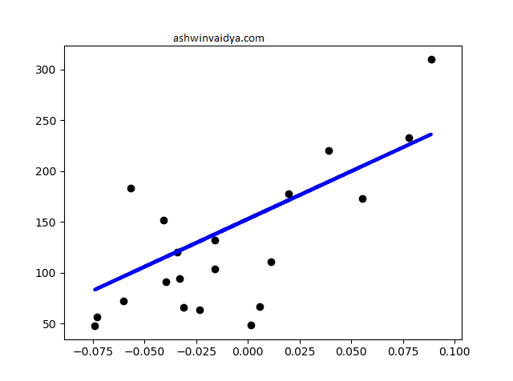
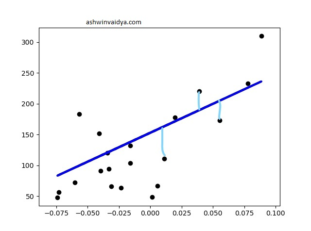

Suppose you are working in a space agency and you want to predict when the next solar flare might hit Earth. You then start collecting data such as the time when previous flares hit Earth, gamma-ray radiations received, etc. Then, you plot these variables and examine whether there is a relationship between them and the solar flares in the past. You can then fit a curve and try to predict the occurrence of solar flares in the future. Now, I am not an Astrophysicist so the above method may not work. But, it is a good model of what regression is. In regression, few independent variables are used to predict dependent variables. Say, finding house prices (dependent) using floor size (independent). Here, the value of house price is dependent on the total area of the floor.
In this post, I will focus on a particular form of regression; Linear Regression. In linear regression, the best fit curve is a straight line. See the example below.

Let’s quickly apply linear regression.
import numpy as np
from sklearn import linear_model, datasets
from sklearn.model_selection import train_test_split
from sklearn.metrics import mean_squared_error # to find the error between predicted and the actual values
# Load Dataset
diabetes = datasets.load_diabetes()
#split data into training and testing
# From the sklearn dicumentation
#----
# Use only one feature
diabetes_X = diabetes.data[:, np.newaxis, 2]
# Split the data into training/testing sets
diabetes_X_train = diabetes_X[:-20]
diabetes_X_test = diabetes_X[-20:]
# Split the targets into training/testing sets
diabetes_y_train = diabetes.target[:-20]
diabetes_y_test = diabetes.target[-20:]
#----
model = linear_model.LinearRegression()
#now fit the model
model.fit(diabetes_X_train, diabetes_y_train)
#make predictions
predictions = model.predict(diabetes_X_test)
print("Error: %0.2f" % mean_squared_error(diabetes_y_test, predictions))
In this example, linear regression might not be the best model. Here, the errors turn out to be high. However, it serves our purpose.
Since our aim is to create the best fit line. But, how do measure that the line best fits our data? Since our goal is to minimize errors we can use the sum of squared errors as our metric. This helps achieve the least distance from each data point. The line while has the least SSE score is taken as the best fit line.
